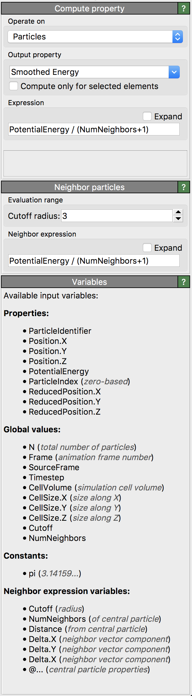

Compute property
{kind=link}
This modifier assigns new values to a per-particle or per-bond property by computing them according to a user-defined mathematical formula. The modifier may also be used to create new particle or bond properties.
The user-defined formula for computing the property values can include references to existing per-particle or per-bond data as well as global parameters such as the simulation box dimensions or the current animation time. You can find a list of all available input variables in the user interface of the modifier. Furthermore, the Compute property modifier supports performing computations that involve neighboring particles within a spherical volume around each particle.
Output property
As described in the introduction on particle properties, certain properties
such as Color or Radius have a special meaning to the program as their values control the visual appearance of particles and bonds.
Thus, if you use the Compute property modifier to set or modify such properties, it will affect the visualization directly.
For instance, you can use the modifier to change the values of the Position
particle property and move particles around or set the Color property to give particles newly computed colors.
When setting the Selection property, the Compute property modifier acts like a more powerful
version of the Expression selection modifier.
You can also use the Compute property modifier to assign new kinds of properties to particles or bonds and use this information in subsequent operations in the data pipeline or export it to an output file. Simply enter a name of your choice for the new property into the input field Output property. Note that property names in OVITO are always case-sensitive. All standard property names defined by the program are found in the drop-down list box.
Vector properties
Some particle properties in OVITO such as Position or Color possess multiple components per particle.
In such cases, you’ll have to enter a separate math expression for each vector component of the output property.
Note that, in the current program version, the modifier does not allow you to create user-defined vector properties.
You can only create scalar user-defined properties.
Selective and conditional property assignment
If the selected output property already exists, then the old values of the property will be overwritten with the new ones computed by the modifier. The option Compute only for selected elements, however, lets you restrict the assignment to a subset of the particles or bonds and thus preserve the existing property values for some of the elements.
The ternary operator ?: (described in the operator table below) allows you to use simple if-else conditions as part of the calculation.
For example, to make all particles in the upper half of the simulation box semi-transparent and the particles in the lower half fully opaque,
one could use the following conditional expression to set the values of the Transparency particle property:
(ReducedPosition.Z > 0.5) ? 0.7 : 0.0
For more complex computations, which cannot be accomplished with static expressions like in this example, please consider using the Python script modifier instead, which lets you write custom modification functions in a real programming language.
Including neighbor particles in the calculation
In the standard case, the expression for computing the output value for a particle depends only on the values of existing properties of the particle as well as global quantities such as the current simulation time. Optionally, the modifier allows you to specify a formula that includes terms referring to the properties of neighboring particles within a certain range around the central particle for which the output property value is being calculated.
Formally speaking, the modifier supports formulas of the following general form
\(P(i) = F(i) + \sum_{j \in \mathcal{N}_i}{G(j)}\),
with
\(\mathcal{N}_i = {j: |\mathbf{r}_i - \mathbf{r}_j| < R_c}\),
for computing the output property value \(P(i)\) for some particle \(i\). The first term, \(F(i)\), refers to the base expression, which only depends on the properties of central particle \(i\) itself. The second term consists of contributions from all neighboring particles within a spherical region of radius \(R_c\) centered around particle \(i\). These neighbor contributions to the final output value are computed according to a second user-defined expression, \(G(j)\), which is evaluated for every neighbor particle \(j\). This formula for the user-defined function \(G(j)\) must be entered into the input field Neighbor expression, and it can depend on property values of the current neighbor particle \(j\), property values of the central particle \(i\), and the vector connecting the two particles.
The neighbor term allows you to perform advanced computations that involve the local neighborhood of particles. For example, you can use this feature
to average an existing particle property (e.g. named InputProperty) over a spherical volume around each particle by using the following expressions:
F(i) := InputProperty / (NumNeighbors+1)
G(j) := InputProperty / (NumNeighbors+1)
Note that NumNeighbors is a dynamic variable that represents the number of neighbors within the selected cutoff radius,
which is used in this example to normalize the resulting mean property value.
We can even weight the contributions from different neighbors according to their distance from the central particle by incorporating the Distance
dynamic variable in the expression for \(G(j)\). To give another example, the following pair of expressions computes the potential energy of each particle according to a Lennard-Jones function:
F(i) := 0
G(j) := 4 * (Distance^-12 - Distance^-6)
In this example, the central particle makes no contribution to the final output value, only its neighbor particles do.
Within the neighbor expression term, \(G(j)\), it is possible to refer to properties of the central particle \(i\) by prepending the property name with an @-symbol. For example, we can use this feature to count the neighbors around a particle whose types are different from the type of the central particle:
F(i) := 0
G(j) := ParticleType != @ParticleType
Here, the negative comparison operator != will evaluate to 1 if the type of particle \(j\) is
not equal to the type of particle \(i\); and 0 otherwise.
Computations on bonds
In addition to particle properties, the modifier also allows you to compute and assign new bond properties.
In bond-based mode, regular expression variables refer to existing properties of the current bond. Additionally, you can incorporate
the properties of the two adjacent particles connected by the current bond into the expression. When referring to a particle
property, you need to prepend @1. or @2. to the property name.
For example, we can use the following expression to set the Selection property
of bonds and thus select all bonds which connect two particles of different type and whose length exceeds a
threshold value of 2.8:
@1.ParticleType != @2.ParticleType && BondLength > 2.8
Note that, in general, the orientation of bonds is arbitrary. Thus, a bond can point from particle A to particle
B or vice versa, and accordingly @1. and @2. alike can refer to either one of the
two particles connected by the bond. This means, in some cases more complex expressions are necessary to account
for the two possibilities. For example, to select all bonds that connect pairs of particles of
type 1 and 2:
(@1.ParticleType == 1 && @2.ParticleType == 2) || (@1.ParticleType == 2 && @2.ParticleType == 1)
Expression syntax
The expression syntax supported by the modifier is very similar to the one of the C programming language. Variable names and function names are case-sensitive. Variable names are restricted to alphanumeric characters and underscores. OVITO automatically replaces invalid characters in input property names with an underscore to generate valid variable names that can be referenced in expressions. Arithmetic expressions can be composed from constant values, input variables and math functions using the following operators in the given order of precedence:
Operator |
Description |
|---|---|
|
expressions in parentheses are evaluated first |
|
exponentiation (A raised to the power B) |
|
multiplication and division |
|
addition and subtraction |
|
comparison between A and B (result is either 0 or 1) |
|
logical AND operator: result is 1 if A and B differ from 0, else 0 |
|
logical OR operator: result is 1 if A or B differ from 0, else 0 |
|
if A differs from 0 (i.e. is true), the resulting value of this expression is B, else C |
The expression parser supports the following functions:
Function name |
Description |
|---|---|
|
Absolute value of A. If A is negative, returns -A otherwise returns A. |
|
Arc-cosine of A. Returns the angle, measured in radians, whose cosine is A. |
|
Same as |
|
Arc-sine of A. Returns the angle, measured in radians, whose sine is A. |
|
Same as |
|
Arc-tangent of A. Returns the angle, measured in radians, whose tangent is A. |
|
Two argument variant of the arctangent function. Returns the angle, measured in radians. see here. |
|
Same as |
|
Returns the average of all arguments. |
|
Cosine of A. Returns the cosine of the angle A, where A is measured in radians. |
|
Same as |
|
Exponential of A. Returns the value of e raised to the power A where e is the base of the natural logarithm, i.e. the non-repeating value approximately equal to 2.71828182846. |
|
Returns the floating-point remainder of A/B (rounded towards zero). |
|
Rounds A to the closest integer. 0.5 is rounded to 1. |
|
Natural (base e) logarithm of A. |
|
Base 10 logarithm of A. |
|
Base 2 logarithm of A. |
|
Returns the maximum of all values. |
|
Returns the minimum of all values. |
|
Returns: 1 if A is positive; -1 if A is negative; 0 if A is zero. |
|
Sine of A. Returns the sine of the angle A, where A is measured in radians. |
|
Same as |
|
Square root of a value. |
|
Returns the sum of all parameter values. |
|
Tangent of A. Returns the tangent of the angle A, where A is measured in radians. |
Additional example 1
Our aim is to compute the linear velocity of each particle based on the components \(v_x\), \(v_y\), and \(v_z\) of its velocity
vector. For this, we create a new user-defined property with the name Speed, which is computed
according to the following expression:
sqrt(Velocity.X^2 + Velocity.Y^2 + Velocity.Z^2)
Note that this expressions contains references to the X, Y, and Z components of the standard
Velocity particle property, which must be present in the input dataset for this to work.
The computed linear velocity values, stored in the new particle property Speed, can subsequently be used to color particles with the
Color coding modifier, for instance.
Additional example 2
The Compute property modifier can also be used to set
particle properties which are not modifiable by other means. One such example is
the per-particle radius: Let us assume you have already selected a subset of particles
and want to give these particles a different size.
You can use the Compute property modifier to set
the value of the particle property Radius, which determines the
per-particle display radii (see here).
The selection state of particles is determined by the current value of their
Selection property (non-zero means selected). The conditional
formula Selection ? 1.5 : 0.75 sets a radius that depends on a particle’s selection state.
The above expression will evaluate to 1.5 for selected particles, and to 0.75 for unselected particles.
See also
ovito.modifiers.ComputePropertyModifier (Python API)